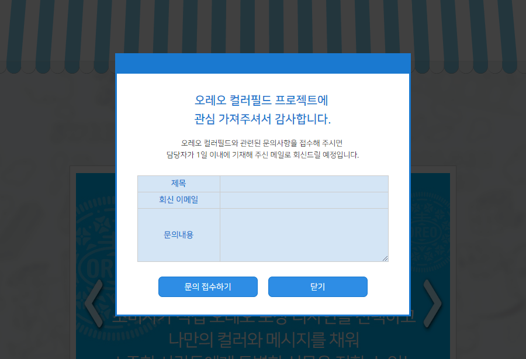

"더" 접근 가능한 Modal Window(Dialog)
What is Modal Window?
사용자 인터페이스 디자인 개념에서 자식 윈도에서 부모 윈도로 돌아가기 전에 사용자의 상호동작을 요구하는 창을 말한다. 그래서 응용 프로그램의 메인 창의 작업 흐름을 방해한다. 일반적으로 모달 대화 상자로 불리는데, 그 이유는 대화 상자를 부를 때 흔히 사용되기 때문이다. 우리가 자주 사용하는 파일 열기/저장 대화 상자를 생각하면 이해하기 쉽다.
모달 창들은 일반적으로 사용자의 명령을 인식하기 위해서나, 긴급 상황을 알리기 위해 많이 사용된다. 웹에서는 이미지 작업을 예로 든다면 이미지를 자세하게 볼 때 자주 사용된다.

시작하기 전에...
- 이 강의는 Code Lab 형태로 진행되며,
- JavaScript는 많은 분들의 이해를 돕기 위해 ES5 기준으로 설명되며, 절차적 프로그래밍을 따라 설명됩니다.
실습을 위한 예제 파일은 아래 주소에서 받으실 수 있습니다.
다운로드
- Git 사용자
$ git clone https://github.com/niawa/AOA.git - Direct Download:
접근성 오픈 아카데미 GitHub (https://github.com/niawa/aoa)
- Git 사용자
실습 파일 실행
Node.js 사용자
Node.js 개발 환경이 구축되어 있는 분은 패키지 설치 후
npm start를 실행하면 livereload가 적용되어 있는 로컬 웹서버가 자동 실행됩니다.$ cd 2018/09.07/ $ npm install $ npm start- 개발 환경이 구축되어 있지 않은 분의 경우
2018/09.07/source/index.html파일을 브라우저에서 바로 열어서 확인 하실 수 있습니다. (단, 파일 수정 시 자동으로 갱신되지 않으므로 수동으로 갱신하여 확인하셔야 합니다.)